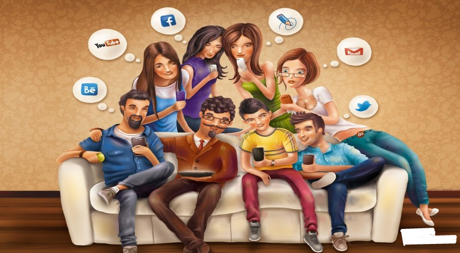

Наш блог о SMM, SEO продвижение, веб-сайт и брендинг
В нашем блоге, самые актуальные темы в сфере маркетинга. Здесь собраны полезные статьи, которые будут полезны и помогут узнать о том, что такое СММ, для чего нужен брендинг и на чем нужно акцентировать внимание при создании логотипа. Кроме того, здесь вы узнаете о важности правильного и качественного SEO продвижении и о том, в чем разница между лэндингом и веб-сайтом. Поэтому, читайте наши статьи и повышайте свою грамотность вместе с нами.Маркетинг в социальных сетях стал проще: пошаговое руководство
Не думаю, что мне нужно говорить вам, насколько велики социальные сети...SMM - Маркетинговые услуги в социальных сетях
Маркетинг в социальных сетях (SMM) является благом для рекламной индустрии и открыл целый новый мир возможностей для ...Преимущества маркетинга в социальных сетях (SMM) для бизнеса
Социальный контент-маркетинг - это область, где встречаются контент-маркетинг...
Почему маркетинг в социальных сетях (SMM) важен для вашего бизнеса?
За последние несколько лет социальные сети полностью изменили весь мир, а ....Что такое бренд?
Бренд - это то, как компания, организация или отдельное лицо воспринимаются теми, кто с ними сталкивается. Бренд - это больше, чем просто имя ...Что такое брендинг и почему он важен для вашего маркетинга?
Брендинг - это любое название, дизайн или другой письменный или визуальный атрибут...Что такое интернет реклама?
На сегодняшний день, интернет реклама является самым легким, быстрым и доступным видом,...